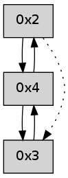

>> << IDX [start] -100 -25 -5 +0 +5 +25 +100 [245.020236015]
 Previous packets
----------------------------------------------------------------------
240.202875 beacon01(adaf) #0 coord=01,02,03,04 cycle=304.0ms assoc
-- color-indic=0 64 c7 58
240.212826 beacon02(adaf) #0 coord=01,02,03,04 cycle=304.0ms assoc 64 d7 3d
240.222827 beacon03(adaf) #0 coord=01,02,03,04 cycle=304.0ms assoc 64 98 91
240.232827 beacon04(adaf) #0 coord=01,02,03,04 cycle=304.0ms assoc 64 46 cc
240.244426 [Hello(4): seq=25 sym=3 sysInfo= stat=3:9,0,0,0]
----------------------------------------------------------------------
240.546971 beacon01(adaf) #0 coord=01,02,03,04 cycle=304.0ms assoc
-- color-indic=0 64 f5 87
240.556923 beacon02(adaf) #0 coord=01,02,03,04 cycle=304.0ms assoc 64 e5 e2
240.566924 beacon03(adaf) #0 coord=01,02,03,04 cycle=304.0ms assoc 64 aa 4e
240.576924 beacon04(adaf) #0 coord=01,02,03,04 cycle=304.0ms assoc 64 74 13
240.588559 [Hello(3): seq=26 sym=4 sysInfo= stat=4:5,0,0,0]
----------------------------------------------------------------------
240.891067 beacon01(adaf) #0 coord=01,02,03,04 cycle=304.0ms assoc
-- color-indic=0 64 1b cd
240.901019 beacon02(adaf) #0 coord=01,02,03,04 cycle=304.0ms assoc 64 0b a8
240.911020 beacon03(adaf) #0 coord=01,02,03,04 cycle=304.0ms assoc 64 44 04
240.921019 beacon04(adaf) #0 coord=01,02,03,04 cycle=304.0ms assoc 64 9a 59
240.932658 [Hello(4): seq=26 sym=3 sysInfo= stat=3:10,0,0,0]
----------------------------------------------------------------------
241.235163 beacon01(adaf) #0 coord=01,02,03,04 cycle=304.0ms assoc
-- color-indic=0 64 76 f8
241.245115 beacon02(adaf) #0 coord=01,02,03,04 cycle=304.0ms assoc 64 66 9d
241.255115 beacon03(adaf) #0 coord=01,02,03,04 cycle=304.0ms assoc 64 29 31
241.276732 [Hello(3): seq=27 sym=4 sysInfo= stat=4:6,0,0,0]
----------------------------------------------------------------------
241.579259 beacon01(adaf) #0 coord=01,02,03,04 cycle=304.0ms assoc
-- color-indic=0 64 98 b2
241.589210 beacon02(adaf) #0 coord=01,02,03,04 cycle=304.0ms assoc 64 88 d7
241.599211 beacon03(adaf) #0 coord=01,02,03,04 cycle=304.0ms assoc 64 c7 7b
241.609211 beacon04(adaf) #0 coord=01,02,03,04 cycle=304.0ms assoc 64 19 26
241.620853 [Hello(2): seq=525 asym=3,4 sysInfo= stat=3:2,0,0,0/4:1,0,0,0]
----------------------------------------------------------------------
241.923355 beacon01(adaf) #0 coord=01,02,03,04 cycle=304.0ms assoc
-- color-indic=0 64 aa 6d
241.964736 [Hello(4): seq=27 sym=3,2 sysInfo= stat=3:10,0,0,0/2:0,0,0,0]
----------------------------------------------------------------------
242.267451 beacon01(adaf) #0 coord=01,02,03,04 cycle=304.0ms assoc
-- color-indic=0 64 44 27
242.277402 beacon02(adaf) #0 coord=01,02,03,04 cycle=304.0ms assoc 64 54 42
242.287405 beacon03(adaf) #0 coord=01,02,03,04 cycle=304.0ms assoc 64 1b ee
242.297406 beacon04(adaf) #0 coord=01,02,03,04 cycle=304.0ms assoc 64 c5 b3
----------------------------------------------------------------------
242.611547 beacon01(adaf) #0 coord=01,02,03,04 cycle=304.0ms assoc
-- color-indic=0 64 df db
242.621499 beacon02(adaf) #0 coord=01,02,03,04 cycle=304.0ms assoc 64 cf be
242.631500 beacon03(adaf) #0 coord=01,02,03,04 cycle=304.0ms assoc 64 80 12
242.641499 beacon04(adaf) #0 coord=01,02,03,04 cycle=304.0ms assoc 64 5e 4f
242.653117 [Hello(4): seq=28 sym=3,2 sysInfo= stat=3:10,0,0,0/2:0,0,0,0]
----------------------------------------------------------------------
242.955643 beacon01(adaf) #0 coord=01,02,03,04 cycle=304.0ms assoc
-- color-indic=0 64 31 91
242.965594 beacon02(adaf) #0 coord=01,02,03,04 cycle=304.0ms assoc 64 21 f4
242.975596 beacon03(adaf) #0 coord=01,02,03,04 cycle=304.0ms assoc 64 6e 58
242.985596 beacon04(adaf) #0 coord=01,02,03,04 cycle=304.0ms assoc 64 b0 05
----------------------------------------------------------------------
243.299739 beacon01(adaf) #0 coord=01,02,03,04 cycle=304.0ms assoc
-- color-indic=0 64 03 4e
243.309691 beacon02(adaf) #0 coord=01,02,03,04 cycle=304.0ms assoc 64 13 2b
243.319692 beacon03(adaf) #0 coord=01,02,03,04 cycle=304.0ms assoc 64 5c 87
243.329692 beacon04(adaf) #0 coord=01,02,03,04 cycle=304.0ms assoc 64 82 da
243.341349 [Hello(4): seq=29 sym=3,2 sysInfo= stat=3:10,0,0,0/2:0,0,0,0]
----------------------------------------------------------------------
243.643835 beacon01(adaf) #0 coord=01,02,03,04 cycle=304.0ms assoc
-- color-indic=0 64 ed 04
243.653788 beacon02(adaf) #0 coord=01,02,03,04 cycle=304.0ms assoc 64 fd 61
243.663788 beacon03(adaf) #0 coord=01,02,03,04 cycle=304.0ms assoc 64 b2 cd
243.673789 beacon04(adaf) #0 coord=01,02,03,04 cycle=304.0ms assoc 64 6c 90
----------------------------------------------------------------------
243.987943 beacon01(adaf) #0 coord=01,02,03,04 cycle=304.0ms assoc
-- color-indic=0 64 24 bf
243.997894 beacon02(adaf) #0 coord=01,02,03,04 cycle=304.0ms assoc 64 34 da
244.007897 beacon03(adaf) #0 coord=01,02,03,04 cycle=304.0ms assoc 64 7b 76
244.029551 [Hello(2): seq=528 asym=3,4 sysInfo= stat=3:2,0,0,0/4:1,0,0,0]
----------------------------------------------------------------------
244.332040 beacon01(adaf) #0 coord=01,02,03,04 cycle=304.0ms assoc
-- color-indic=0 64 ca f5
244.341992 beacon02(adaf) #0 coord=01,02,03,04 cycle=304.0ms assoc 64 da 90
244.351993 beacon03(adaf) #0 coord=01,02,03,04 cycle=304.0ms assoc 64 95 3c
244.361993 beacon04(adaf) #0 coord=01,02,03,04 cycle=304.0ms assoc 64 4b 61
244.373650 [Hello(4): seq=30 sym=3,2 sysInfo= stat=3:10,0,0,0/2:0,0,0,0]
----------------------------------------------------------------------
244.676138 beacon01(adaf) #0 coord=01,02,03,04 cycle=304.0ms assoc
-- color-indic=0 64 f8 2a
244.686092 beacon02(adaf) #0 coord=01,02,03,04 cycle=304.0ms assoc 64 e8 4f
244.696090 beacon03(adaf) #0 coord=01,02,03,04 cycle=304.0ms assoc 64 a7 e3
244.706091 beacon04(adaf) #0 coord=01,02,03,04 cycle=304.0ms assoc 64 79 be
244.717754 [Hello(2): seq=529 sym=4 asym=3 sysInfo= stat=4:2,0,0,0/3:2,0,0,0]